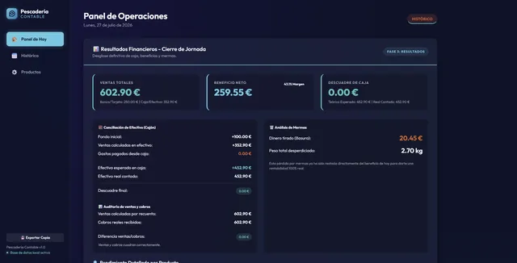

Web o tienda online
Una web clara para presentar tu negocio o vender online.
Experiencia de negocio · IA aplicada
Que te encuentren, que te escriban y que tu día a día sea más sencillo. Lo consigo con webs, tiendas online y aplicaciones creadas con IA, desde mi experiencia como empresario.

Primero entiendo tu negocio. Después uso la IA para construir antes, probar con tus casos reales y ajustar lo que no encaja.
Una web clara para presentar tu negocio o vender online.
Google, WhatsApp y redes enlazados con tu web.
Gestión, reservas, facturas o clientes, probada con casos reales.
Proyectos reales que puedes conocer y que continúan evolucionando.

Web profesional para una clínica online, publicada y en uso.

Un comercio de alimentación en internet, con encargos por WhatsApp.

Una herramienta para preparar y revisar la jornada de una pescadería.
Soy empresario. Antes de crear webs y aplicaciones he tenido que comprar, vender, cuadrar la caja y buscar clientes. Esa experiencia es la que pongo al servicio de tu negocio.
Conoce mi experiencia ↗Cuéntame qué necesitas y empezamos por ahí.